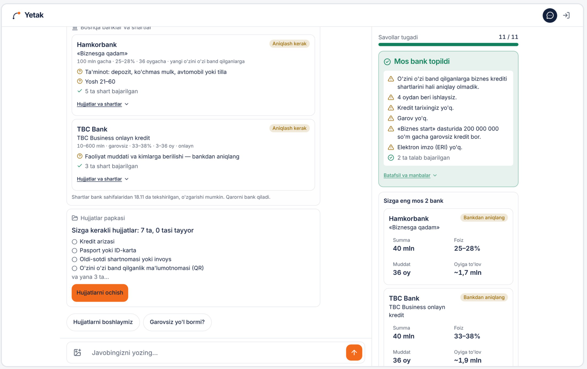

Kichik biznesni bankka tayyor mijoz qilib olib boradi
Umummilliy AI Xakaton · Toshkent · 2026
yetak.diyorjon.com
Ariza
3 262
Kredit
1 005
31%
Tadbirkor bankka tayyor bo’lmay boradi: qaysi bank mos, qaysi hujjat kerak — bilmaydi.
TadbirCore, 01.06–17.09.2026 · Markaziy bank
Anketa yo’q. Hisobni kod qiladi. «Kredit olasiz» demaymiz.
1
2
3
Tadbirkor
Suhbat
o’z so’zi bilan
Mos bank
2–3 bank, oylik to’lov
Bitta papka
hujjatlar, AI tekshiradi
Bank yoki TadbirCore
TadbirCore — bankning eshigi. Yetak — o’sha eshikkacha yo’l.
50–100 ming so’m. Tadbirkor navbatda turmaydi.
Tadbirkor
ishonchnoma beradi
notarius
Yetak vakili
my.gov.uz
Soliq
Kadastr
Bank
Bitta papka
Tadbirkor oxirida o’zi imzo qo’yadi · ERI kaliti olinmaydi · doirasini yurist tasdiqlaydi
Yanvar
Iyun
Oktabr
Hozir
Notarius videoaloqada ishlaydi
TadbirCore: bitta ariza — ko’p bank
Foiz kompensatsiyasi, kredit tarixi shart emas
LLM o’zbekcha hujjat o’qiydi: 360 so’m / xabar
2026 · Anhor, Markaziy bank, Spot; LLM — Yetak server loglari
1 236 126
faol kichik biznes
~90%
hali bank kreditini ishlatmaydi
120 000
3 yillik maqsadimiz
stat.uz, 01.07.2026 · Markaziy bank SME konsepsiyasi
Ariza paytida
Arizadan oldin
Tadbirkor tomonida
Bank tomonida
Bank ilovalari
TadbirCore
Foiz saytlari
Maslahatchi (pullik)
Yetak
TadbirCore — raqib emas: bizdan o’tgan odam unga tayyor keladi
Tadbirkor, bank xodimi, admin.
6 bank shartlari tekshirilgan.
Har javobda manba.
yetak.diyorjon.com

Tadbirkor
Yetak
Bank
tayyor mijoz
tayyor ariza
50–100 ming
1% kreditdan
0 so’m
Yo’l ko’rsatish, bank tanlash va boshqa hammasi
50–100 ming
Hujjatlarni biz yig’amiz: ishonchnoma bilan my.gov.uz va soliqdan
1%
Bank faqat kredit berilganda to’laydi
Reja: bank shartnomasi hali yo’q · AQShda Lendio: 1–6%
LTV 126 000 · CAC 36 000 so’m · LLM 360 so’m / xabar
100
keladi
40
papka to’ldiradi
12
hujjatni bizga yig’dirtiradi
8
kredit oladi
8,9
−3,6
−0,47
+4,8
Daromad
CAC
LLM
Natija
100 tadbirkor, mln so’m · faraz, pilotda o’lchanadi · LLM narxi o’lchangan
DA
Diyor Adashev
Texnik lead
Sh
Shoxjahon
Sotuv
M
Muhammadnur
Dasturchi
I
Ilyos
Dasturchi
A
Ali
Dizayner
5
Bugun
7
6 oy: bank menejeri, yurist
12
18 oy: hujjat operatorlari
18
36 oy: viloyat menejerlari
Oddiy ishni LLM qiladi — bitta operator ko’p tadbirkorga yetadi
Daromad, mlrd so’m · ssenariy
0,45
2,67
10,68
1-yil
2-yil
3-yil
Bizga kerak:
3 bank bilan pilot
1 tuman hokimligi
Yurist maslahati
Faraz: 5 000 → 30 000 → 120 000 tadbirkor · yetak.diyorjon.com